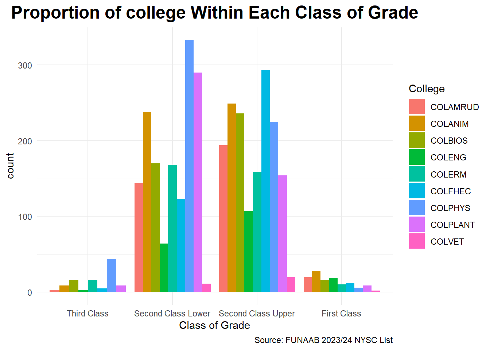

Announcement – Welcome to my portfolio website, a curated space highlighting my academic journey, research endeavors, and analytical projects. Feel free to explore, connect, and engage with my work.
A Cross-Sectional Study of the Effect of Age, College and Sex on Academic Performance among FUNAAB Graduates Mobilized for NYSC in 2024
code
analysis
r
Author
Ayorinde Ayomide David
Published
2025-08-11
Introduction
Academic performance remains a central concern for educators, policymakers, and researchers, especially in higher education institutions where various individual and institutional factors may shape students’ academic outcomes. While curriculum content and instructional methods often receive primary attention, growing evidence suggests that demographic characteristics—such as age, gender, academic discipline, and region of origin may significantly influence students’ academic achievements.
Age has been associated with varying levels of academic maturity, motivation, and learning capacity. Younger students may possess cognitive flexibility but lack the life experience that older students bring to their studies. Similarly, gender disparities in academic performance, often shaped by socio-cultural expectations and opportunities, continue to attract scholarly interest. In Nigeria and beyond, gender-based performance gaps have been observed across academic disciplines, with conflicting findings on whether male or female students outperform their counterparts.
Additionally, the academic department or field of study introduces another layer of complexity. Differences in academic rigor, grading policies, and student support structures across departments may contribute to observable disparities in academic outcomes. However, using department as a predictor can be statistically problematic due to sample size imbalances and high variability. As such, grouping departments into broader academic units such as colleges offers a more stable and interpretable approach to understanding institutional influences on performance.
This study aims to examine the influence of age, gender, and college affiliation on the academic performance of graduates from the Federal University of Agriculture, Abeokuta (FUNAAB), using data from the 2023/2024 NYSC mobilization list. Academic performance is operationalized using the class of degree attained, which serves as a reliable proxy in the absence of raw CGPA. By focusing on a single graduating cohort, the study offers a cross-sectional snapshot of demographic and institutional patterns that may underlie academic success. The findings will provide insights into potential equity issues and inform academic support strategies within the university setting.
Objective of the Study
The primary objective of this study is to examine the effect of age, gender, college affiliation, and region of origin on the academic performance of graduates from the Federal University of Agriculture, Abeokuta, using the 2023/2024 NYSC mobilization list.
Specifically, the study seeks to:
Assess the relationship between gender and academic performance among the graduates.
Evaluate the extent to which college affiliation (as a proxy for department) affects academic outcomes.
Explore the combined effect of age, gender, college affiliation, and region on the class of degree attained.
Data Description
This dataset used in this study was obtained from the 2023/24 National Youth Service Corps (NYSC) mobilization list of the Federal University of Agriculture, Abeokuta (FUNAAB). This dataset comprises information on 3406 graduates who were successfully mobilized for national service.
The dataset includes demographic, academic, and institutional variables relevant to the analysis of academic performance. Each row in the dataset represents an individual graduate, and the variables collected include:
Code
gt(data.frame(Variable_Name =c("matriculation_no", "state", "courseof_study", "class_of_grade", "marital_status","gender", "date_of_birth", "college", "department_code", "age", "region"), Description =c("A unique identifier for each student", "The Nigeria state attributed to the graduate", "The degree programme pursued by the graduate","The final class of degree awarded to the student", "The marital status of the graduate (Married or Single)","The sex of the graduate (Male or Female)","The graduate date of birth", "The academic unit or faculty under which the student graduated", "Abbreviated code representing the graduate's department", "Age of graduate", "The Nigeria region attributed to the graduate")))
Variable_Name
Description
matriculation_no
A unique identifier for each student
state
The Nigeria state attributed to the graduate
courseof_study
The degree programme pursued by the graduate
class_of_grade
The final class of degree awarded to the student
marital_status
The marital status of the graduate (Married or Single)
gender
The sex of the graduate (Male or Female)
date_of_birth
The graduate date of birth
college
The academic unit or faculty under which the student graduated
department_code
Abbreviated code representing the graduate's department
age
Age of graduate
region
The Nigeria region attributed to the graduate
Data Exploration, Cleaning, Manipulation and Transformation
To begin the analysis, the necessary R packages were loaded, including tidyverse, gt, here, janitor, lubridate, and visdat, which collectively support data manipulation, visualization, and cleaning. Following this, the NYSC dataset was imported into the R environment. An initial assessment was conducted to determine the dataset’s structure, including the number of rows and columns, and to preview the first ten records.
The properties of each variable were inspected to understand data types and formats. Special attention was given to the Date of Graduation column, which was found to contain a substantial number of missing values. This observation was first noted during the structure inspection and subsequently confirmed using summary statistics and missing value checks.
To preserve confidentiality and ensure ethical data handling, columns containing sensitive or personally identifiable information such as names, phone numbers,jamb registration number and matric numbers were excluded from the working dataset. A new CSV file was then generated to store this modified version of the dataset.
Finally, data cleaning and transformation were carried out on the refined dataset. This included tasks such as deriving new variables (age and region), and preparing the data for statistical analysis.
Data Exploration
Code
#nysc <- read_csv(here("Data/NYSC.csv")) # Loading the dataset into R#dim(nysc) # Investigating the dimension of the dataset#head(nysc, n= 10) # Exploring the first 10 rows of the dataset#glimpse(nysc) # Inspecting the dataset#sum(is.na(nysc$`Date of Graduation`)) # Investigating the number of missing values in the Date of Graduation colunm#nysc_list <- nysc %>% # Dropping private information columns and the column with no entry#mutate(id = str_sub(JambNumber, -8, -1)) %>% #select(-c(Firstname,Middlename, Surname, MatriculationNo,JambNumber, Phone, `Date of Graduation`)) %>% #select(id, everything())#write_csv(nysc_list,"nysc_modified.csv") # Creating a csv file for the modified dataset
Data Cleaning
Code
nysc_list_modified <-read_csv(here("posts/Academic performance/data/nysc_modified.csv")) # Loading the modified dataset into Rvis_dat(nysc_list_modified) # Visualizing the dataset to investigate it's properties
Code
nysc_list_modified_cleaned <- nysc_list_modified %>%# Cleaning the column name for consistencyclean_names()nysc_list_modified_cleaned %>%# Identifying duplicated rows based on matriculation numberget_dupes(id)
# A tibble: 1,942 × 10
id dupe_count statename courseof_study class_of_grade marital_status
<chr> <int> <chr> <chr> <chr> <chr>
1 000108IC 2 Ogun State AGRICULTURE/B.A… Second Class … S
2 000108IC 2 Ogun State AGRICULTURE/B.A… Second Class … S
3 001054FH 2 Ogun State AQUACULTURE AND… Second Class … S
4 001054FH 2 Ogun State AQUACULTURE AND… Second Class … S
5 001145HF 2 Ogun State AGRICULTURE/B.A… Second Class … S
6 001145HF 2 Ogun State AGRICULTURE/B.A… Second Class … S
7 003265CA 2 Ondo State AGRICULTURE/B.A… Second Class … S
8 003265CA 2 Ondo State AGRICULTURE/B.A… Second Class … S
9 003289EF 2 Ogun State AGRICULTURE/B.A… Second Class … S
10 003289EF 2 Ogun State AGRICULTURE/B.A… Second Class … S
# ℹ 1,932 more rows
# ℹ 4 more variables: gender <chr>, date_of_birth <date>, college <chr>,
# deptment_code <chr>
FORESTRY AND WILDLIFE MANAGEMENT (FORESTRY OPTION)/B.FWM
51 (1.5%)
FORESTRY AND WILDLIFE MANAGEMENT (WILDLIFE OPTION)/B.FWM
37 (1.1%)
HOME SCIENCE AND MANAGEMENT(CHILD DEVELOPMENT & FAMILY STUDIES)/B.Sc.
70 (2.1%)
HOME SCIENCE AND MANAGEMENT(CLOTHING & TEXTILE)/B.Sc.
28 (0.8%)
HOME SCIENCE AND MANAGEMENT(EXTENSION & RURAL DEVELOPMENT)/B.Sc.
5 (0.1%)
HOSPITALITY AND TOURISM/B.Sc.
120 (3.5%)
MATHEMATICS/B.Sc.
114 (3.3%)
MECHANICAL ENGINEERING/B.ENGR.
35 (1.0%)
MECHATRONICS ENGINEERING/B.ENGR.
29 (0.9%)
MICROBIOLOGY/B.Sc.
122 (3.6%)
NUTRITION AND DIETETICS/B.Sc.
106 (3.1%)
PHYSICS/B.Sc.
128 (3.8%)
STATISTICS/B.Sc.
125 (3.7%)
VETERINARY MEDICINE/DVM
33 (1.0%)
WATER RESOURCES MANAGEMENT AND AGROMETEOROLOGY (AGROMETEOROLOGY OPTION)/B.WRMA
6 (0.2%)
WATER RESOURCES MANAGEMENT AND AGROMETEOROLOGY (HYDROLOGY OPTION)/B.WRMA
47 (1.4%)
ZOOLOGY/B.SC.
89 (2.6%)
class_of_grade
Third Class
106 (3.1%)
Second Class Lower
1,541 (45%)
Second Class Upper
1,637 (48%)
First Class
122 (3.6%)
marital_status
M
2 (<0.1%)
S
3,404 (100%)
gender
F
1,617 (47%)
M
1,789 (53%)
date_of_birth
2000-09-24 (1999-04-30, 2001-12-09)
college
COLAMRUD
361 (11%)
COLANIM
524 (15%)
COLBIOS
438 (13%)
COLENG
193 (5.7%)
COLERM
353 (10%)
COLFHEC
433 (13%)
COLMAS
1 (<0.1%)
COLPHYS
608 (18%)
COLPLANT
462 (14%)
COLVET
33 (1.0%)
deptment_code
ABE
44 (1.3%)
ABG
85 (2.5%)
AEFM
130 (3.8%)
AERD
110 (3.2%)
AGAD
121 (3.6%)
ANN
120 (3.5%)
ANP
104 (3.1%)
APH
128 (3.8%)
AQFM
105 (3.1%)
BCH
129 (3.8%)
CHM
100 (2.9%)
CPT
85 (2.5%)
CSC
141 (4.1%)
CVE
43 (1.3%)
ELE
42 (1.2%)
EMT
107 (3.1%)
ETS
1 (<0.1%)
FST
104 (3.1%)
FWM
88 (2.6%)
HRT
86 (2.5%)
HSM
103 (3.0%)
HTM
120 (3.5%)
MCB
122 (3.6%)
MCE
35 (1.0%)
MTE
29 (0.9%)
MTS
114 (3.3%)
NUD
106 (3.1%)
PAB
98 (2.9%)
PAZ
89 (2.6%)
PBST
85 (2.5%)
PHS
128 (3.8%)
PPCP
86 (2.5%)
PRM
87 (2.6%)
SSLM
120 (3.5%)
STS
125 (3.7%)
VET
33 (1.0%)
WMA
53 (1.6%)
1 n (%); Median (Q1, Q3)
Code
nysc_list_modified_cleaned <- nysc_list_modified_cleaned %>%# Cleaning the entries of statename for controlmutate(statename =case_when(statename =="Akwa Ibom State"~"Akwa-Ibom State", statename =="Cross River State"~"Cross-River State", T ~ statename))nysc_list_modified_cleaned <- nysc_list_modified_cleaned %>%# Splitting statename into state and state1 and dropping the latterseparate(statename, into =c("state", "state1"), sep =" ") %>% dplyr::select(-state1)nysc_list_modified_cleaned <- nysc_list_modified_cleaned %>%# Creating the region columnmutate(region =case_when(state %in%c("Kaduna", "Kogi", "Niger", "Plateau", "Zamfara", "FCT") ~"Northern", state %in%c("Abia", "Anambra", "Ebonyi", "Enugu", "Imo") ~"Eastern", state %in%c("Akwa-Ibom", "Cross-River", "Delta", "Edo","Benue", "Rivers") ~"Southern", state %in%c("Ekiti", "Kwara", "Lagos", "Ogun", "Ondo", "Osun", "Oyo") ~"Western"))nysc_list_modified_cleaned <- nysc_list_modified_cleaned %>%# Creating the age columnmutate(age =round(date_of_birth %--%dmy("02-08-2024")/years()))
Data Analysis and Visualization
Gender as a Predictor of Academic Achievement
Is gender associated with academic achievement?
Code
nysc_list_modified_cleaned %>%ggplot(mapping =aes(x = class_of_grade)) +geom_bar(mapping =aes(fill = gender)) +labs(x ="Class of Grade",title ="Proportion of Gender within Each Class of Grade",caption ="Source: FUNAAB 2023/24 NYSC List",fill ="Gender")+theme_minimal() +theme(plot.title =element_text(hjust =0.5,face ="bold",size =18))
The bar chart above provides a visual representation of the distribution of gender across academic performance categories. It offers an initial impression of how male and female graduates are spread across the different classifications of academic achievement (such as First Class, Second Class Upper, etc.). While the chart reveals some observable patterns — such as possible concentration or variation in specific degree classes for each gender — it does not offer conclusive evidence of a statistically significant relationship between gender and academic performance.
Given that both variables involved are categorical in nature (gender and class of degree), visual inspection alone is insufficient to determine whether an association truly exists between them or if any observed differences are simply due to random variation. Therefore, to formally assess whether a statistically significant relationship exists between gender and academic performance, it is necessary to conduct a Chi-square test of independence. This test will help determine whether the variables are associated or independent of one another.
Chi-Square Test of Independence
Ho: There is no association between gender and academic achievement.
H1: There is association between gender and academic achievement.
Code
nysc_list_modified_cleaned %>%# Parsing gender and class of grade into a table dplyr::select(gender,class_of_grade) %>%table()
class_of_grade
gender Third Class Second Class Lower Second Class Upper First Class
F 23 598 931 65
M 83 943 706 57
Code
nysc_list_modified_cleaned %>%# Finding the chi-square test of independence dplyr::select(gender,class_of_grade) %>%table() %>%chisq.test()
Decision rule: If p-value is less than 0.05, we reject null hypothesis, otherwise, we fail to reject null hypothesis.
Conclusion: Since the p-value is less than 0.05, there is enough evidence to conclude that there is association between gender and academic achievement. Hence, we conclude that there is association between gender and academic achievement.
College as a Predictor of Academic Achievement
Is college associated with academic achievement?
Code
nysc_list_modified_cleaned %>%filter(college %in%c("COLANIM", "COLAMRUD","COLENG", "COLBIOS", "COLFHEC", "COLERM", "COLPLANT", "COLVET", "COLPHYS")) %>%# COLMAS was dropped because it produced just one graduate which could consequently flaw our analysisggplot(mapping =aes(x =class_of_grade,fill = college)) +geom_bar(position ="dodge") +labs(x ="Class of Grade",fill ="College",title ="Proportion of college Within Each Class of Grade") +theme_minimal() +theme(plot.title =element_text(hjust =0.5,face ="bold",size =18))

Following the earlier bar chart on gender and academic performance, which offered insight into how degree classifications are distributed across male and female graduates, the current bar chart extends this exploration by examining the distribution of academic performance across different colleges. This comparison allows for a broader understanding of how academic outcomes vary not only by gender but also by institutional affiliation.
As shown above, the chart provides a visual summary of how graduates from various colleges are represented within each degree classification (for example, First Class, Second Class Upper, and so on). While certain patterns may be visually apparent, such as possible concentrations of specific degree classes within some colleges, these observations are not enough to determine whether a meaningful relationship exists between college and academic performance.
Because both variables, college and class of degree, are categorical, visual inspection alone is not sufficient. Any apparent differences might be due to random variation. To formally assess whether a statistically significant relationship exists, a Chi square test of independence is necessary. This will determine whether college affiliation is associated with academic performance or whether the observed differences occurred by chance.
Chi-Square Test of independence
Ho: There is no association between gender and academic achievement.
H1: There is association between gender and academic achievement.
Code
tab <- nysc_list_modified_cleaned %>%#Parsing college and class of grade into a tablefilter(college %in%c("COLANIM", "COLAMRUD","COLENG", "COLBIOS", "COLFHEC", "COLERM", "COLPLANT", "COLVET", "COLPHYS")) %>%# filtering COLMAS out since just one graduate was produced by this college dplyr::select(college, class_of_grade) %>%droplevels() # This drops the filtered COLMAS entrytab %>%filter(college =="COLMAS")
# A tibble: 0 × 2
# ℹ 2 variables: college <fct>, class_of_grade <ord>
Code
cross_tab <-table(tab)cross_tab
class_of_grade
college Third Class Second Class Lower Second Class Upper First Class
COLAMRUD 3 144 194 20
COLANIM 9 238 249 28
COLBIOS 16 170 236 16
COLENG 3 64 107 19
COLERM 16 168 159 10
COLFHEC 5 123 293 12
COLPHYS 44 333 225 6
COLPLANT 9 290 154 9
COLVET 0 11 20 2
In this phase of the analysis, the objective is to determine whether there is a significant association between college affiliation and class of degree attained among the graduates under study. The Chi-square test of independence is a widely used statistical method for evaluating such relationships between categorical variables. However, one of its key assumptions is that the expected frequency in each cell of the contingency table should be at least 5.
While the dataset contains a large overall number of observations, certain combinations of college and class of degree — particularly those representing less common degree classifications within specific colleges — have small observed and expected counts. This violates the minimum expected frequency requirement, meaning that the standard Chi-square test’s p-value may be unreliable.
To address this issue, the Monte Carlo simulation version of the Chi-square test was employed. This method involves generating a large number of random contingency tables under the assumption of independence, with the marginal totals fixed. For each simulated table, the Chi-square statistic is calculated, and the p-value is estimated empirically as the proportion of simulated statistics equal to or greater than the observed statistic.
By using this approach, the analysis accounts for the uneven distribution of observations across categories, ensuring that the statistical inference regarding the relationship between college affiliation and class of degree is both valid and robust, even in the presence of small expected counts in some cells.
Code
cross_tab%>%chisq.test(simulate.p.value = T, B =3400)
Pearson's Chi-squared test with simulated p-value (based on 3400
replicates)
data: .
X-squared = 266.99, df = NA, p-value = 0.000294
Decision rule: If p-value is less than 0.05, we reject null hypothesis, otherwise, we fail to reject null hypothesis.
Conclusion: Since the p-value is less than 0.05, there is enough evidence to conclude that there is association between college and academic achievement. Hence, we conclude that there is association between college and academic achievement.
Post-Hoc Test
The Monte Carlo Chi-square test of independence revealed a statistically significant association between college affiliation and class of degree attained. While this finding establishes that a relationship exists, the Chi-square test does not indicate which specific combinations of categories contribute most to the association. To gain deeper insight, a post hoc analysis was conducted.
Post hoc testing in this context serves to identify the exact College–Class of Degree pairs that deviate significantly from the expected counts under the null hypothesis of independence. This was achieved by examining the standardized residuals from the Chi-square test. Standardized residuals represent the difference between the observed and expected frequencies in each cell of the contingency table, expressed in standard deviation units. Large positive residuals indicate that a particular combination occurred more frequently than expected, while large negative residuals indicate it occurred less frequently than expected.
To control for the increased risk of Type I errors arising from multiple comparisons, the p-values corresponding to the residuals were adjusted using the Bonferroni correction method. This adjustment ensures that the identification of significant cells remains statistically rigorous.
Through this post hoc analysis, the study not only confirms the presence of a relationship between college affiliation and class of degree but also pinpoints the specific areas where the patterns differ, thereby providing more actionable and interpretable findings.
Post hoc pairwise comparisons using the Chi-square test with Bonferroni adjustment revealed several significant differences in class-of-degree distribution between colleges. Notably, the difference between COLFHEC and COLPLANT was statistically significant (adjusted p = 0.00076) with a Cramér’s V of 0.353, indicating a medium association. Similarly, COLENG vs. COLPHYS (adjusted p = 0.00076, Cramér’s V = 0.297) and COLFHEC vs. COLPHYS (adjusted p = 0.00076, Cramér’s V = 0.329) showed moderate associations. Other significant comparisons, such as COLPHYS vs. COLPLANT (adjusted p = 0.00125, Cramér’s V = 0.138), had smaller effect sizes, suggesting weaker practical differences despite statistical significance.
Combined Effect of Age, Gender, College Affiliation on the Class of Degree Attained
The combined effect of age, gender and college affiliation on the class of degree attained can be examined within the framework of an ordinal logistic regression model, since the class of degree is an ordered categorical outcome. Age may account for variations in academic maturity, while gender could reflect potential disparities in academic engagement or performance. College affiliation captures institutional differences in academic standards, available resources, and programme demands. Modelling these predictors jointly allows for the assessment of both main effects and interaction terms, providing insight into whether the influence of one variable depends on the level of another. This approach ensures a comprehensive statistical evaluation of the multifactorial determinants of academic achievement.
Code
model_orl <-polr(class_of_grade ~ age + college + gender, data = nysc_list_modified_cleaned, Hess = T)summary(model_orl)
Call:
polr(formula = class_of_grade ~ age + college + gender, data = nysc_list_modified_cleaned,
Hess = T)
Coefficients:
Value Std. Error t value
age -0.02427 1.663e-02 -1.459e+00
collegeCOLANIM -0.28224 1.357e-01 -2.080e+00
collegeCOLBIOS -0.32851 1.430e-01 -2.297e+00
collegeCOLENG 0.52867 1.837e-01 2.878e+00
collegeCOLERM -0.61081 1.489e-01 -4.102e+00
collegeCOLFHEC 0.03021 1.453e-01 2.079e-01
collegeCOLMAS -11.58338 3.476e-06 -3.332e+06
collegeCOLPHYS -0.95280 1.351e-01 -7.055e+00
collegeCOLPLANT -0.99820 1.398e-01 -7.142e+00
collegeCOLVET 0.27960 3.674e-01 7.610e-01
genderM -0.69664 7.407e-02 -9.405e+00
Intercepts:
Value Std. Error t value
Third Class|Second Class Lower -4.9785 0.4337 -11.4800
Second Class Lower|Second Class Upper -1.4364 0.4201 -3.4192
Second Class Upper|First Class 2.0810 0.4263 4.8813
Residual Deviance: 6087.421
AIC: 6115.421